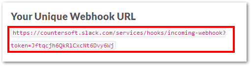
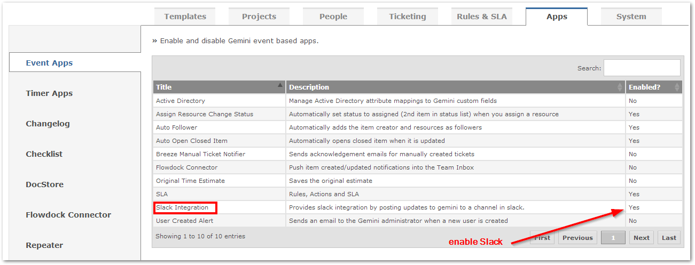
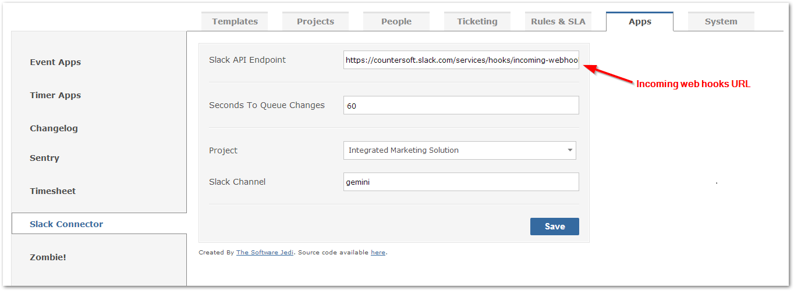
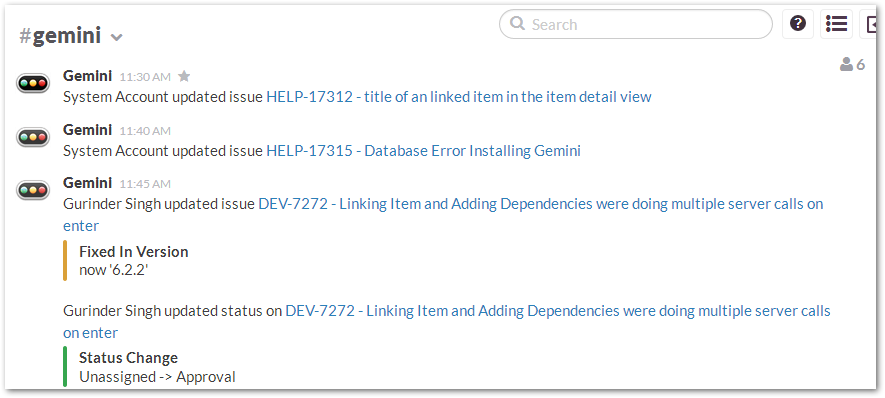

Slack is is a centralized dashboard for technical teams providing real-time updates, feeds and status information from popular tools and bespoke systems. Updates from Gemini can be streamed directly into any channels within Slack.
Follow the below instructions to configure Gemini and Slack.
Log into Slack (you must be an admin) and enable Slack Incoming Web Hooks.
On the incoming web hooks page, scroll down the page and choose a channel, then click "Add Incoming Webhook".
Copy the provided URL.

Ensure the Slack app within Gemini is enabled.

Paste the slack incoming web hooks url to the box and configure project that you wish to enable intergration for, select it, enter a channle name, then press "Save".

Every item created or updated will know appear in your channel within Slack.
